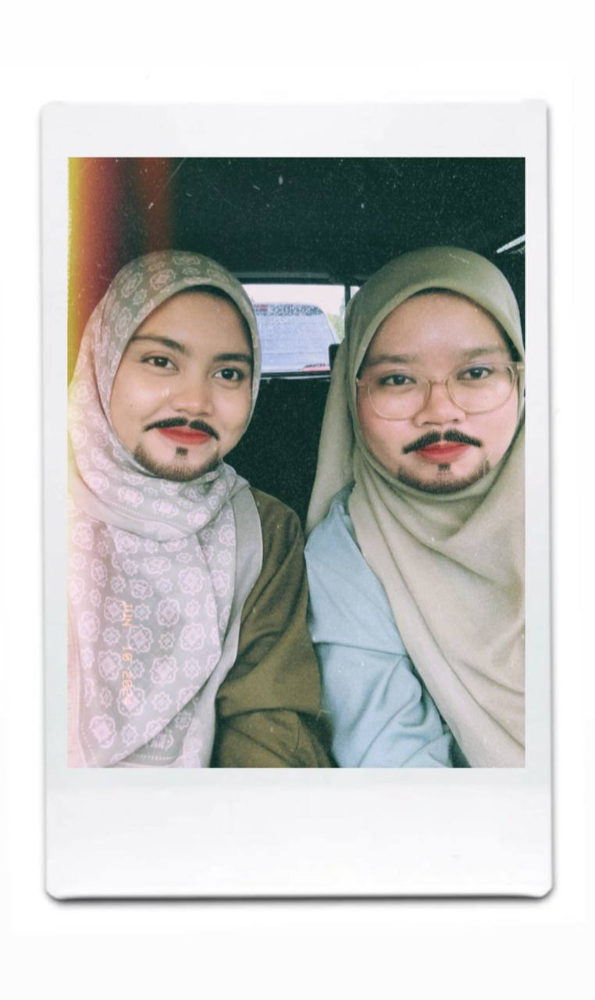

I have a lot of friends, but this is my best friend from 2017. We started friend at the beginning of high school, and I used to call my friends Tira and Anii.In the beginning, I was just a friend with Tira , but in the middle year we started friend with Anii. They are a place to tell stories and ride on the shoulder to tell all the problems and stories that I experienced. My bestfriends is very important and valuable to me. They were a second home to me without them, so I lost my wings.Every friendship must have its ups and downs. How could it be that my best friend and I have never fought.
I have a lot of friends, but this is my best friend from 2017. We started friend at the beginning of high school, and I used to call my friends Tira and Anii.In the beginning, I was just a friend with Tira , but in the middle year we started friend with Anii. They are a place to tell stories and ride on the shoulder to tell all the problems and stories that I experienced. My bestfriends is very important and valuable to me. They were a second home to me without them, so I lost my wings.Every friendship must have its ups and downs. How could it be that my best friend and I have never fought.
We have fought because of a misunderstanding between me and them. This fight took more than a week for us to fix. For me, my friend is very mature and good at solving this problem. I am proud to have friends like them.Even though now each other's time is limited unlike before, this relationship has never been broken. Each has her own career and her own way of life. Only during holidays do we take the opportunity to meet and exchange news. I hope this relationship will not be broken until heaven.
 My friend's name is Ahsana but I call her Mah.We met at the end of 2020 when we were both 16 years old. Because he's a new student, I don't get along with him very well.At first, I thought she was arrogant, but at the end of the day, she was lovely, kind, and crazy like me.Because I was sitting in the same room as him 1 our relationship became more intimate. We also often share stories with each other, such as expressing feelings or problems experienced.We work at the same workplace after high school.